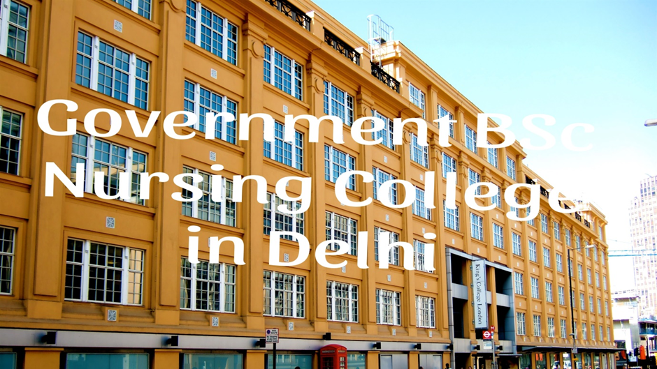

Top 5 Best Government B.Sc Nursing Colleges in Delhi
Are you aware that one of the most fulfilling careers, next to being a doctor, is that of a nurse? If you're interested in pursuing a career in nursing, it's essential to start with the best education. Explore the top BSc Nursing colleges in New Delhi that can set you on the path to success in this vital field. Nursing is a critical profession, comparable to medicine, offering stability and security similar to that of doctors.
The nursing profession will remain indispensable as long as humanity exists. The opportunities in nursing are vast, ranging from private and government hospitals to nursing homes, freelance opportunities, and more.
If you're passionate about this career and aspire to become a successful nurse, take a look at the top BSc Nursing colleges in New Delhi that can help you achieve your goals.
List of 5 Best Government B.Sc Nursing Colleges in Delhi
1. All India Institute of Medical Sciences – AIIMS
AIIMS Delhi is one of India's premier medical institutions, known for its high standards in education, research, and patient care. Established in 1956, AIIMS offers a variety of undergraduate and postgraduate courses, including the B.Sc. Nursing (Hons.) program.
The B.Sc. Nursing course at AIIMS Delhi is a four-year program designed to train students in all aspects of nursing. To be eligible, candidates must have completed 10+2 or equivalent with Physics, Chemistry, Biology, and English, securing at least 55% marks (50% for SC/ST candidates). Only female candidates who are 17 years or older by December 31 of the admission year are eligible to apply.
Admission to the B.Sc. Nursing course is based on the AIIMS entrance exam, a competitive test held annually. Candidates are selected based on their performance in this exam, followed by counseling sessions.
AIIMS Delhi provides state-of-the-art infrastructure for its nursing students, including well-equipped laboratories, a modern library with a vast collection of medical literature, and a fully computerized resource center. The campus also has hostel facilities, a cafeteria, and recreational areas, all designed to support the academic and personal growth of students. The attached AIIMS hospital offers practical training opportunities, giving students hands-on experience in a real-world healthcare environment.
2. Municipal Corporation of Delhi College of Nursing - Hindu Rao Hospital
The College of Nursing at Hindu Rao Hospital, originally established as a School of Nursing in 1960, began with a Diploma in General Nursing & Midwifery, a course of 3½ years duration. In 2019, the school was upgraded to a College of Nursing. Affiliated with Guru Gobind Singh Indraprastha University and recognized by both the Indian Nursing Council and Delhi Nursing Council, the college offers a B.Sc. (H) Nursing program, which commenced in 2019. The program is 4 years long, with an annual intake of 20+2 students (including EWS, subject to change).
Eligibility Criteria:
- Only unmarried female candidates may apply.
- Candidates must be at least 17 years old by December 31 of the admission year.
- A 10+2 qualification from CBSE with Science (Physics, Chemistry, Biology) and at least 45% in aggregate is required. Candidates must also have passed English.
Admission Process: Admission is based on the National Eligibility cum Entrance Test (NEET-UG) and subsequent counseling by GGSIPU. The minimum qualifying percentile varies by category: General (50), SC/ST/OBC (40), General-PwD (45), and SC/ST/OBC-PwD (40).
The curriculum adheres to Indian Nursing Council standards, featuring well-equipped labs, experienced faculty, and comprehensive facilities, including a girls' hostel, cafeteria, and sports ground, all under CCTV surveillance.
3. Vardhman Mahavir Medical College and Safdarjung Hospital
Vardhman Mahavir Medical College and Safdarjung Hospital (VMMC & SJH) is a prestigious medical institution in New Delhi, offering a range of undergraduate and postgraduate courses, including a B.Sc. Nursing program. The B.Sc. Nursing course at VMMC & SJH is a four-year program aimed at preparing students for a professional career in nursing, with a strong emphasis on clinical skills and theoretical knowledge.
To be eligible for the B.Sc. Nursing course at VMMC & SJH, candidates must have completed 10+2 with Physics, Chemistry, Biology, and English, securing a minimum of 50% marks in aggregate (45% for SC/ST candidates). Candidates must be 17 years or older by December 31 of the year of admission.
The admission process for the B.Sc. Nursing program involves appearing for the entrance examination conducted by Guru Gobind Singh Indraprastha University (GGSIPU), with admission based on the merit list generated from the exam results. Successful candidates are then required to participate in a counseling process for seat allocation.
VMMC & SJH offers excellent infrastructure, including well-equipped classrooms, laboratories, and a comprehensive library. The college is affiliated with Safdarjung Hospital, one of the largest hospitals in India, providing students with extensive clinical exposure. Additionally, hostel facilities, a cafeteria, and recreational areas are available, creating a supportive environment for both academic and personal growth.
4. Florence Nightingale College of Nursing
Florence Nightingale College of Nursing at Guru Teg Bahadur Hospital (GTBH) in Delhi was established in 1994 to offer a General Nursing and Midwifery (GNM) course. In 2019, the college was upgraded to provide a B.Sc. Nursing program with the approval of the Department of Health & Family Welfare, Government of NCT of Delhi, Indian Nursing Council, and Delhi Nursing Council. The college is financially managed by the Government of NCT of Delhi and academically affiliated with the University of Delhi.
GTBH is a 1,500-bed multi-specialty tertiary care hospital located in Dilshad Garden, Delhi. It is associated with the University College of Medical Sciences (affiliated with the University of Delhi), the Centre for Diabetes, Endocrinology, and Metabolism (DEM) with 40 beds, Delhi State Cancer Institute (DSCI) with 102 beds, and Rajiv Gandhi Super Specialty Hospital with 650 beds. These facilities are utilized for practical training for nursing students.
The B.Sc. Nursing course spans four years, divided into eight semesters, including an internship. The curriculum is designed to equip students with comprehensive knowledge and skills in various nursing areas, preparing them to deliver professional care in diverse healthcare settings. Students gain practical experience in both hospital and community environments, and their progress is continuously assessed through exams, projects, and practical assignments.
5. Lady Hardinge Medical College
The College of Nursing at Lady Hardinge Medical College and Associated Hospitals in New Delhi is a pioneer in nursing education in India. Established in 1916 as a School of Nursing, it was upgraded to a College of Nursing in September 2007 with support from the Ministry of Health and Family Welfare. Affiliated with the University of Delhi and recognized by the Indian Nursing Council, the college aims to enhance the quality of nursing education to meet the increasing demand for skilled nursing care.
The college is associated with two prestigious hospitals: Smt. Sucheta Kriplani Hospital (formerly Lady Hardinge Hospital) and Kalawati Saran Children Hospital, where students gain extensive practical experience. The College of Nursing offers a B.Sc. (Hons.) Nursing course, which spans four years. This program is designed to address the nursing care needs of society while supporting the educational and personal development of nursing students.
The college emphasizes preparing students for professional nursing practices across various fields and encourages continuous education for personal and professional growth. With a focus on communication skills, ethical responsibilities, and innovative approaches, the curriculum integrates behavioral and biological sciences to provide a comprehensive education. The college admits students in July each year.